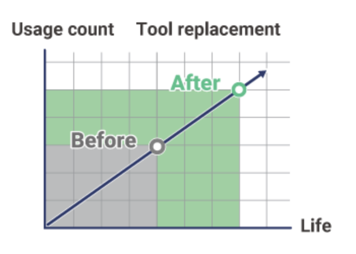
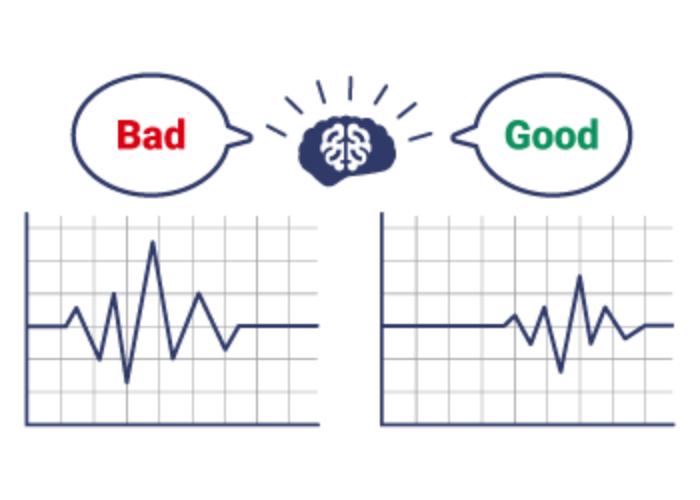

Products
MELSOFT MaiLab

What is MELSOFT MaiLab?
The data analysis software "MELSOFT MaiLab" enables data utilization without special knowledge. It solves various challenges and further improves manufacturing.
What MELSOFT MaiLab can do
Replacement with digital
technology and data utilization
Automatic creation using AI lets even beginners in data analysis feel at ease.
Excellent for waveform data processing
Analysis and diagnosis with a single tool
High affinity with Mitsubishi Electric FA equipment
Challenges MELSOFT MaiLab can solve
Various processes based on "human experience and intuition"
Cost reduction
Normally, the time to replace consumables is determined based on the time and number of uses.
With MELSOFT MaiLab, by analyzing and diagnosing consumable data, you can understand the condition of consumables and replace them at the optimal time, resulting in cost reduction.
Skill succession and workforce saving
The input of parameters for manufacturing equipment tends to rely on the know-how of skilled workers.
By using AI, it is possible to digitize the know-how of skilled workers, which is difficult to document, and support the transfer of skills to beginners.
Improved productivity
To prevent sudden failures that reduce operating rates, it is necessary to monitor the status of equipment and perform maintenance before a failure occurs.
By digitizing the status of equipment and analyzing it with AI, failures can be predicted, leading to improved productivity.
Improved quality
When human operators visually inspect production quality using graphical data, human variability occurs. By performing quality inspections using AI, it is possible to perform detailed inspections without variation and improve product quality.
MELSOFT MaiLab's ease of use
MELSOFT MaiLab can be linked to the site at the touch of a button and easily applied to equipment. In addition, it has a high affinity for Mitsubishi Electric FA equipment, making it easy to deploy on equipment.
Users can be added, and
the system can be
added
to factory equipment.
If you want to increase the number of analysis users, expand the equipment in your factory, or integrate a diagnostic system into your mass production equipment, please purchase an additional license. You can configure the system to suit your environment.
When using
Mitsubishi Electric FA
equipment,
devices can be
specified directly.
MELSOFT MaiLab has high affinity with Mitsubishi Electric FA equipment. Since direct specification of compatible devices can be performed, device deployment (arrangement) can also be performed easily.